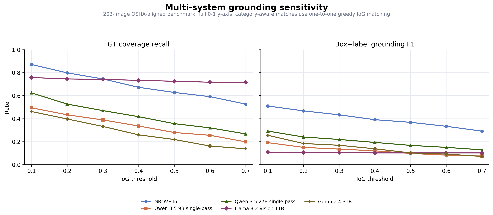

GROVE AI Open Ablation Evidence Package
Technical summary. The archived GROVE system retains a large
identification advantage over the best tested single-pass baseline. The new
multi-system sensitivity analysis shows that raw IoG ranking changes at strict
thresholds because a Llama baseline uses broad boxes, while GROVE remains
stronger under IoU, tightness, and one-to-one box+label criteria. Exact reruns
requiring missing local checkpoints are labeled NOT_RUN.
Component ablation evidence
The first table reports identification and provenance. The second reports
grounding behavior for the same variants. Trace-derived, proxy, evaluation-only,
and NOT_RUN rows remain visibly labeled.
| System Variant | Exactness Label | TP/FP/FN | Precision | Recall | Micro F1 | Macro F1 | 95% CI | Mean Latency |
|---|
| Full GROVE | Exact | 167/63/43 | 0.7261 | 0.7952 | 0.7591 | 0.5593 | [0.7014, 0.8077] | 19.937 |
| Trace-enabled GROVE control | Exact cached control | 142/206/68 | 0.4080 | 0.6762 | 0.5090 | 0.4189 | [0.4481, 0.5629] | 22.474 |
| No Path 2 verification | Trace-derived | 141/208/69 | 0.4040 | 0.6714 | 0.5045 | 0.4158 | [0.4457, 0.5574] | |
| No reconciliation (union) | Trace-derived | 142/209/68 | 0.4046 | 0.6762 | 0.5062 | 0.4170 | [0.4457, 0.5593] | |
| GroundingDINO only | Trace-derived | 131/172/79 | 0.4323 | 0.6238 | 0.5107 | 0.4135 | [0.4524, 0.5635] | |
| GroundingDINO + DETR/OpenCLIP stack | Trace-derived | 141/204/69 | 0.4087 | 0.6714 | 0.5081 | 0.4190 | [0.4492, 0.5619] | |
| No fallback grounding (boxes removed) | Trace-derived | 142/206/68 | 0.4080 | 0.6762 | 0.5090 | 0.4189 | [0.4481, 0.5629] | |
| Caption-only keyword proxy | Proxy | 205/1047/5 | 0.1637 | 0.9762 | 0.2804 | 0.2538 | [0.2392, 0.3163] | |
| Image-only direct-Qwen proxy | Proxy | 130/209/80 | 0.3835 | 0.6190 | 0.4736 | 0.3470 | [0.4219, 0.5229] | 7.132 |
| Qwen 3.5 9B existing single-pass | Proxy | 130/209/80 | 0.3835 | 0.6190 | 0.4736 | 0.3470 | [0.4219, 0.5229] | 7.132 |
| No Other category (evaluation-only) | Eval-only | 158/59/28 | 0.7281 | 0.8495 | 0.7841 | 0.5714 | [0.7251, 0.8320] | N/A eval-only |
| Fallback only | NOT_RUN | | | | | | | |
| Caption-only reasoning (exact) | NOT_RUN | | | | | | | |
| Image-only modular reasoning (exact) | NOT_RUN | | | | | | | |
| Qwen 3.5 9B matched-schema single-pass | NOT_RUN | | | | | | | |
| No compliance rules | NOT_RUN | | | | | | | |
| No Other category (prompt rerun) | NOT_RUN | | | | | | | |
| System Variant | GT Coverage | Pred Coverage | Tightness | Mean IoU | Box+Label F1 | Predicted Hazards | No-box Rate |
|---|
| Full GROVE | 0.7449 | 0.6218 | 0.7941 | 0.6282 | 0.4330 | 276 | 0.0036 |
| Trace-enabled GROVE control | 0.7530 | 0.4722 | 0.7843 | 0.6412 | 0.3273 | 418 | 0.0120 |
| No Path 2 verification | 0.7530 | 0.4722 | 0.7843 | 0.6412 | 0.3242 | 418 | 0.0120 |
| No reconciliation (union) | 0.7530 | 0.4723 | 0.7854 | 0.6409 | 0.3263 | 420 | 0.0119 |
| GroundingDINO only | 0.7328 | 0.4901 | 0.7782 | 0.6310 | 0.3389 | 355 | 0.0000 |
| GroundingDINO + DETR/OpenCLIP stack | 0.7530 | 0.4722 | 0.7843 | 0.6412 | 0.3242 | 413 | 0.0000 |
| No fallback grounding (boxes removed) | 0.7328 | 0.4901 | 0.7782 | 0.6310 | 0.3422 | 418 | 0.1507 |
| Caption-only keyword proxy | 0.0000 | 0.0000 | 0.0000 | 0.0000 | 0.0000 | 1252 | 1.0000 |
| Image-only direct-Qwen proxy | 0.3887 | 0.2587 | 0.6963 | 0.4725 | 0.1351 | 471 | 0.3928 |
| Qwen 3.5 9B existing single-pass | 0.3887 | 0.2587 | 0.6963 | 0.4725 | 0.1351 | 471 | 0.3928 |
| No Other category (evaluation-only) | 0.7568 | 0.6145 | 0.7926 | 0.6375 | 0.4463 | 263 | 0.0038 |
| Fallback only | | | | | | | |
| Caption-only reasoning (exact) | | | | | | | |
| Image-only modular reasoning (exact) | | | | | | | |
| Qwen 3.5 9B matched-schema single-pass | | | | | | | |
| No compliance rules | | | | | | | |
| No Other category (prompt rerun) | | | | | | | |
Grounding threshold sensitivity
Category-agnostic IoG is reported alongside IoU, IoP/tightness, and
category-aware one-to-one box+label F1. The full 0--1 axis is retained.

IoG sensitivity
| System | IoG@0.3 | IoG@0.4 | IoG@0.5 | IoG@0.6 | IoG@0.7 | No-box Rate |
|---|
| GROVE full | 0.7449 | 0.6721 | 0.6275 | 0.5911 | 0.5263 | 0.0036 |
| Qwen 3.5 9B single-pass | 0.3887 | 0.3360 | 0.2794 | 0.2551 | 0.1984 | 0.3928 |
| Qwen 3.5 27B single-pass | 0.4696 | 0.4170 | 0.3563 | 0.3198 | 0.2672 | 0.3220 |
| Llama 3.2 Vision 11B | 0.7409 | 0.7328 | 0.7247 | 0.7166 | 0.7166 | 0.1151 |
| Gemma 4 31B | 0.3320 | 0.2591 | 0.2186 | 0.1619 | 0.1377 | 0.2927 |
IoU sensitivity
| System | IoU@0.3 | IoU@0.4 | IoU@0.5 | Mean IoU | Mean Tightness | No-box Rate |
|---|
| GROVE full | 0.6397 | 0.5628 | 0.5101 | 0.7352 | 0.9319 | 0.0036 |
| Qwen 3.5 9B single-pass | 0.2955 | 0.1862 | 0.1417 | 0.5492 | 0.8140 | 0.3928 |
| Qwen 3.5 27B single-pass | 0.3522 | 0.2672 | 0.2267 | 0.5908 | 0.8309 | 0.3220 |
| Llama 3.2 Vision 11B | 0.3806 | 0.2915 | 0.1984 | 0.6096 | 0.6193 | 0.1151 |
| Gemma 4 31B | 0.2186 | 0.1741 | 0.1134 | 0.5212 | 0.7823 | 0.2927 |
IoP sensitivity
| System | IoP@0.3 | IoP@0.5 | Pred Containment@0.3 | Mean Tightness | No-box Rate |
|---|
| GROVE full | 0.8219 | 0.7692 | 0.8436 | 0.9265 | 0.0036 |
| Qwen 3.5 9B single-pass | 0.5263 | 0.4413 | 0.4895 | 0.8585 | 0.3928 |
| Qwen 3.5 27B single-pass | 0.5628 | 0.4899 | 0.6484 | 0.8579 | 0.3220 |
| Llama 3.2 Vision 11B | 0.4291 | 0.2713 | 0.4056 | 0.6489 | 0.1151 |
| Gemma 4 31B | 0.4332 | 0.3360 | 0.6828 | 0.7926 | 0.2927 |
Box+label sensitivity
| System | Box+Label F1@IoG0.3 | Box+Label F1@IoG0.5 | Box+Label F1@IoU0.3 | Box+Label F1@IoU0.5 |
|---|
| GROVE full | 0.4330 | 0.3678 | 0.3602 | 0.3027 |
| Qwen 3.5 9B single-pass | 0.1351 | 0.0976 | 0.1163 | 0.0600 |
| Qwen 3.5 27B single-pass | 0.2189 | 0.1674 | 0.1717 | 0.1245 |
| Llama 3.2 Vision 11B | 0.1053 | 0.1018 | 0.0561 | 0.0246 |
| Gemma 4 31B | 0.1684 | 0.1020 | 0.1173 | 0.0663 |
Compliance, taxonomy, and latency checks
No-hazard false-positive image rate
| System | status | n_no_hazard_images | fp_images | no_hazard_fp_image_rate | no_hazard_specificity | not_run_reason |
|---|
| Full GROVE | COMPUTED | 98 | 13 | 0.1327 | 0.8673 | |
| GROVE-NoComplianceRules | NOT_RUN | 98 | | | | Required qwen3.5:9b model is absent from local Ollama manifests; the Ollama server is not running and internet/model downloads are disallowed. |
| Qwen 3.5 9B single-pass | COMPUTED | 98 | 65 | 0.6633 | 0.3367 | |
| Best single-pass baseline | COMPUTED | 98 | 24 | 0.2449 | 0.7551 | |
No-Other evaluation
| System | status | exactness | TP | FP | FN | precision | recall | micro_f1 | macro_f1 | f1_ci95 | gt_coverage_iog03 | no_box_rate | interpretation |
|---|
| Full GROVE (7 categories) | COMPUTED | Exact | 167 | 63 | 43 | 0.7261 | 0.7952 | 0.7591 | 0.5593 | [0.7014, 0.8077] | 0.7449 | 0.0036 | Primary seven-category result. |
| GROVE-NoOther-EvalOnly | COMPUTED | Eval-only | 158 | 59 | 28 | 0.7281 | 0.8495 | 0.7841 | 0.5714 | [0.7251, 0.8320] | 0.7568 | 0.0038 | Six-category evaluation only; does not model category redistribution. |
| GROVE-NoOther-PromptRerun | NOT_RUN | NOT_RUN | | | | | | | | | | | Exact prompt-level effect remains unmeasured. |
Latency on cached original runs
| system | status | mean_latency_sec | median_latency_sec | p90_latency_sec | p95_latency_sec | std_latency_sec | valid_timing_images | missing_timing_images |
|---|
| GROVE_full_paper_archived | COMPUTED | 19.937 | 19.980 | 24.170 | 24.720 | 2.748 | 203 | 0 |
| baseline_direct_gemma4_31b | COMPUTED | 4.890 | 3.110 | 11.190 | 12.060 | 3.814 | 203 | 0 |
| baseline_direct_llama32_vision_11b_apr2026 | COMPUTED | 8.658 | 7.990 | 11.180 | 12.740 | 1.981 | 203 | 0 |
| baseline_direct_qwen35_27b | COMPUTED | 7.010 | 7.820 | 13.240 | 13.450 | 4.645 | 203 | 0 |
| baseline_direct_qwen35_9b | COMPUTED | 7.132 | 8.270 | 8.650 | 9.040 | 2.850 | 203 | 0 |
Latency reflects original execution environments and is not a
controlled same-hardware benchmark. Trace-derived and evaluation-only variants
do not receive inferred runtimes.
Claim traceability
| claim | evidence | result | caveat |
|---|
| Full GROVE outperforms the best tested single-pass baseline on identification. | table_2_paired_tests.csv; table_1_component_ablation_completed.csv | Paired identification F1 difference +0.2047, 95% CI [0.1353, 0.2728]. | This supports the tested benchmark comparison, not a universal single-pass ceiling. |
| Path 2 and reconciliation provide measurable but modest trace-level gains. | table_1_component_ablation_completed.csv | Matched trace control F1=0.5090; no Path 2 F1=0.5045 (delta -0.0045); no reconciliation F1=0.5062 (delta -0.0028). | These comparisons use the trace-enabled control, not archived full-system internals. |
| The cached grounding gain is not explained solely by fallback boxes. | table_1_component_ablation_completed.csv | Matched trace-control GT coverage=0.7530; GroundingDINO-only=0.7328; removing fallback boxes=0.7328. | A true fallback-only primary-grounder rerun is NOT_RUN because its local weights are unavailable. |
| Raw IoG ranking is not invariant to threshold. | grounding_sensitivity_multisystem/iog_sensitivity.csv | GROVE IoG@0.5=0.6275; Llama IoG@0.5=0.7247. | High IoG can result from broad predicted boxes. |
| GROVE is stronger under stricter localization and box+label criteria. | iou_sensitivity.csv; iop_sensitivity.csv; box_label_sensitivity.csv | GROVE IoU@0.5=0.5101 and box+label F1@IoU0.5=0.3027. | Strict IoU may penalize semantically valid relational boxes. |
| Exact causal claims for fallback-only, caption-only, image-only, compliance rules, and matched schema remain unresolved. | table_1_component_ablation_completed.csv; completion_report.md | Required exact reruns are explicitly marked NOT_RUN. | Proxy rows are retained only as labeled alternatives and are not treated as exact evidence. |
Methods and limitations
All computed evidence uses the same 203-image universe, local COCO labels,
canonical taxonomy, and deterministic seed. IoG, IoU, and IoP use their standard
area definitions. Box+label metrics require category equality and one-to-one
greedy matching by descending overlap.
Two categories have sparse support, the Other class is broad, and exact
inference ablations were blocked by missing local model checkpoints. No numbers
were imputed for blocked variants. The results support a benchmark-specific
modularity claim but not a universal ceiling for single-pass VLMs.